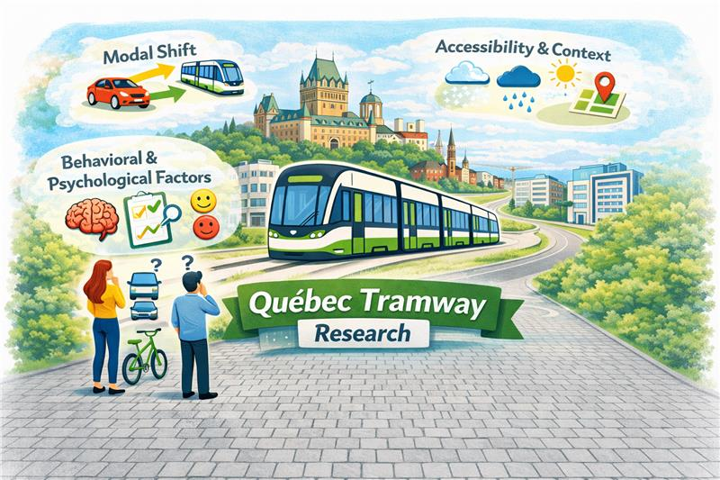
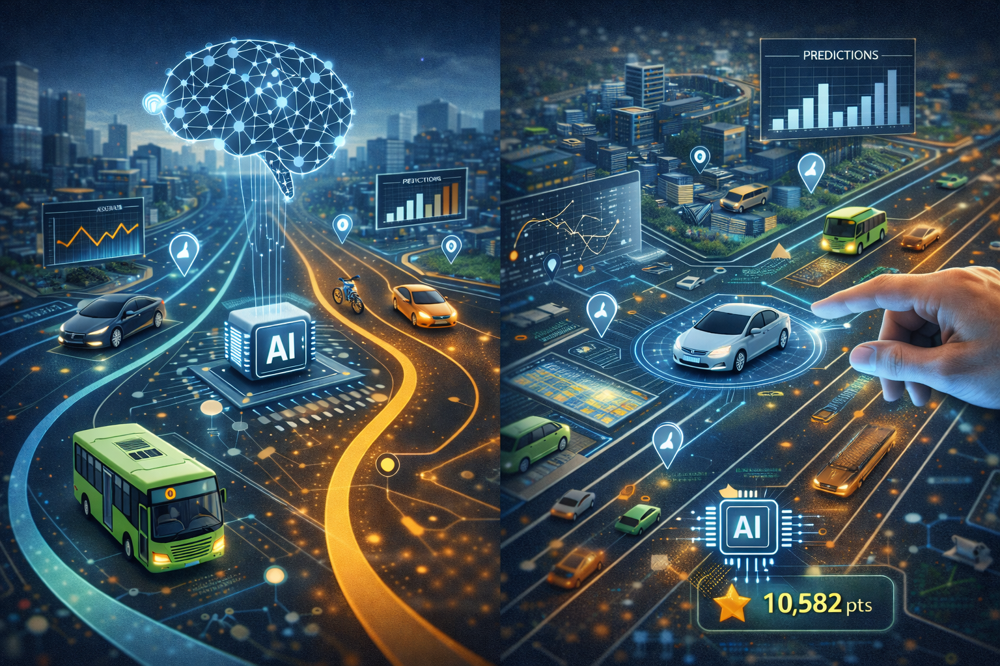
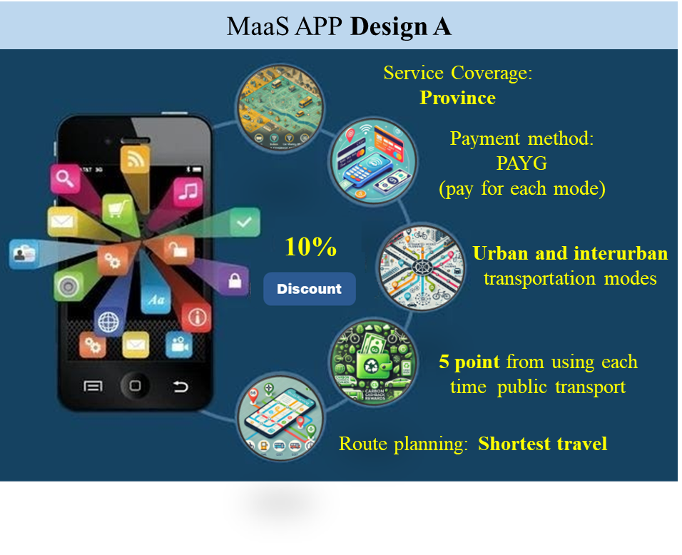
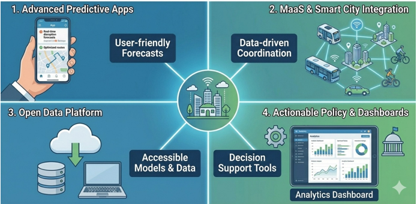
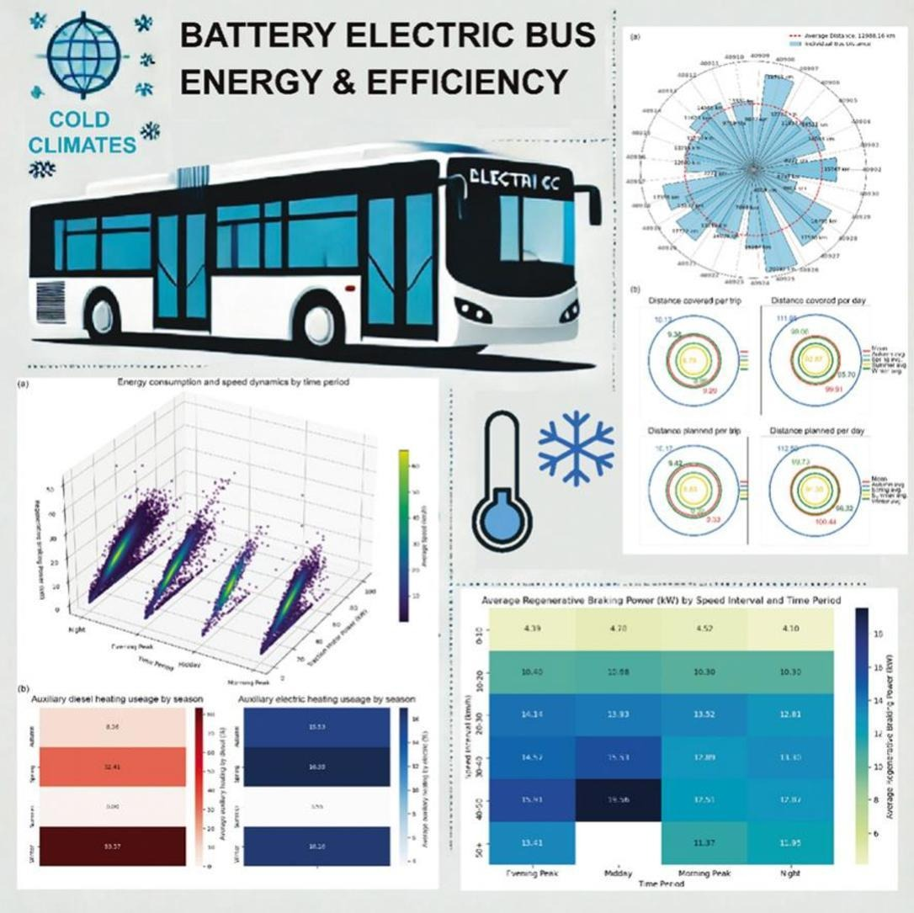
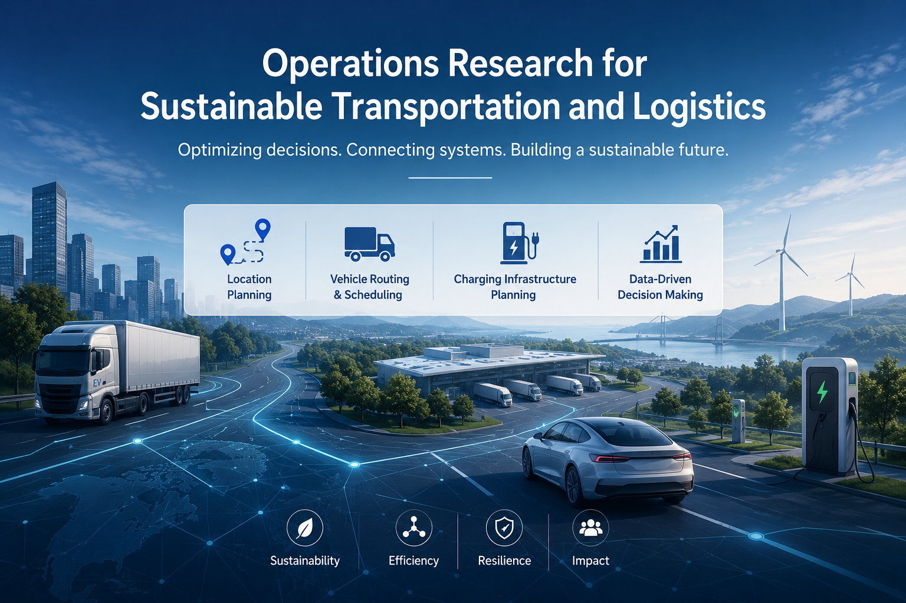
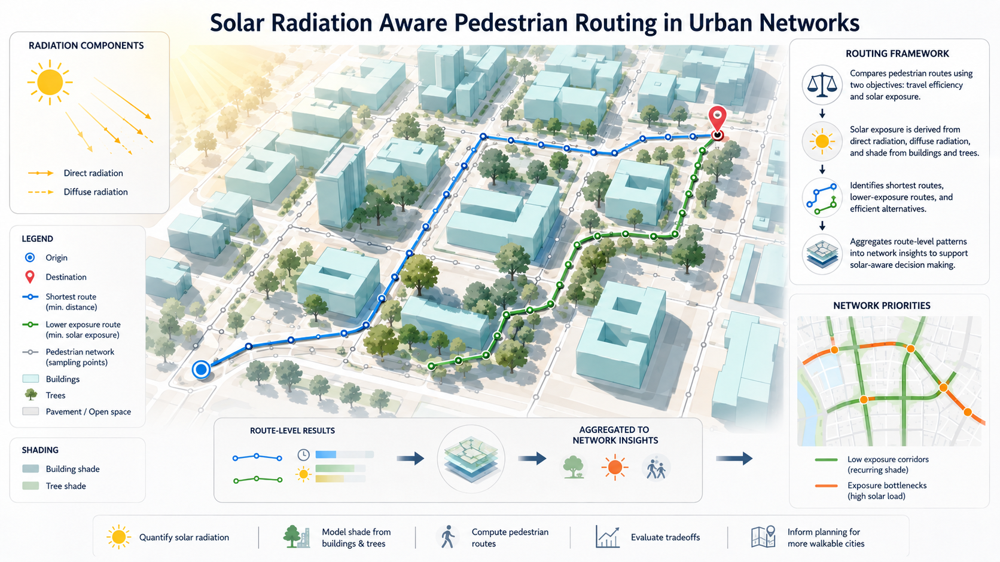

Home
About Prof. Wang
Team
Projects
Publications
Events
Opportunities
Contact
Our Projects
Machine Learning for New Approaches to Urban Mobility Simulation
Understanding and predicting the modal shift of motorists in relation to their territory
The potential of battery electric trucks in forest transportation

PASA-GES: Exploration of the potential of alternatives to single occupancy vehicles to reduce GHG emissions

AI-Driven Optimization for Multimodal Transportation Networks: Integrating Theoretical Insights with Data-Driven Decision Modeling
Carrots and sticks: assessing intervention effectiveness for sustainable mobility systems to reduce GHG emissions

Integrated Multimodal Travel Behavior Analysis under Mobility as a Service

Leveraging deep learning for transportation network resilience and climate adaptation

Transportation electrification in cold-climate regions

Operations Research for Sustainable Transportation and Logistics

Towards Climate-Resilient and Healthy Cities: Integrating Mobility, Thermal Exposure, and Population Vulnerability